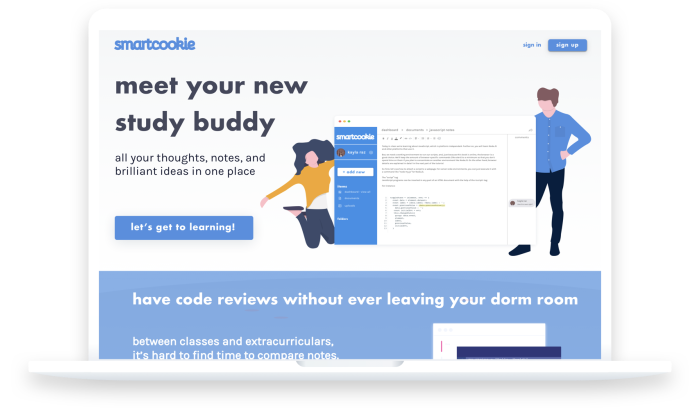
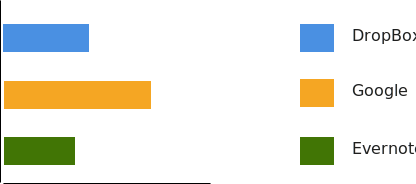
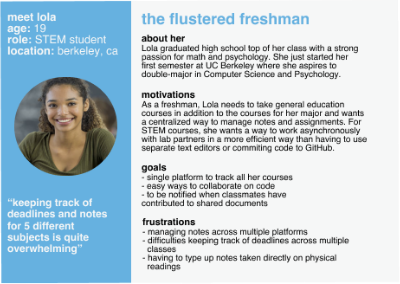
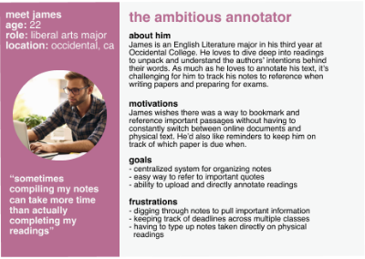
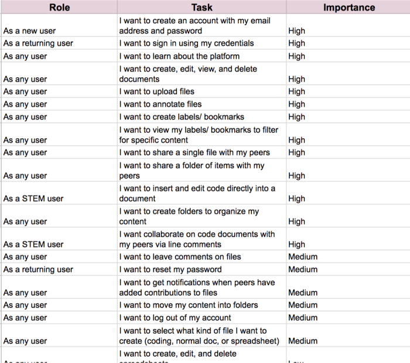
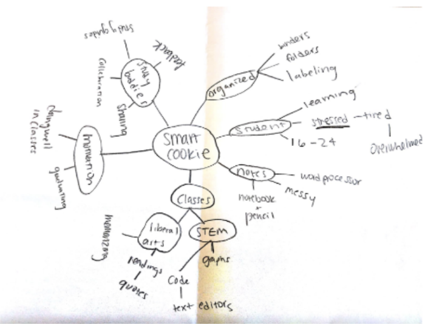
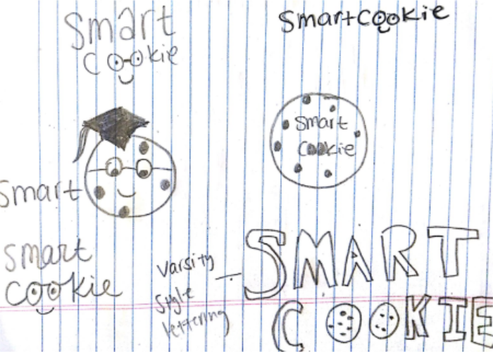
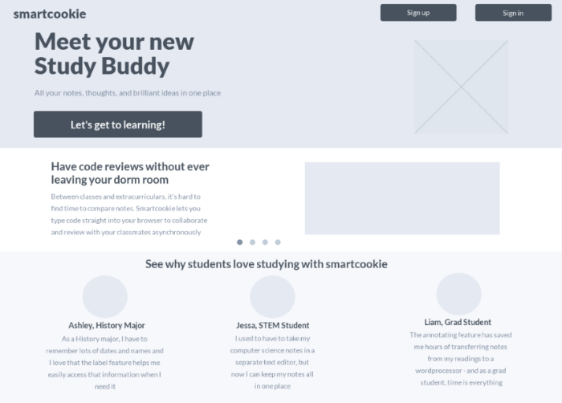
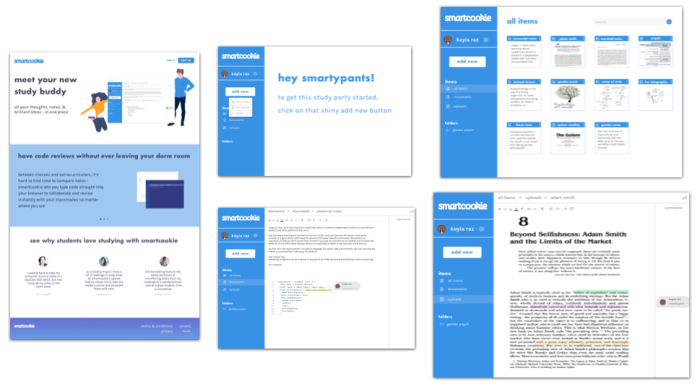

Smartcookie
a student's best friend
View Prototype
SUMMARY
Smartcookie is a students best friend – the one-stop-hub for ideating and organizing notes, readings, code, collaborating with classmates, and more.
ROLE
Research | UX Design | Visual Design | Branding & Identity
TOOLS
Figma | Sketch | Usability Hub | InVision
DELIVERABLES
User Surveys | Personas | User Stories & Flows | Competitive Analysis | Wireframes | Branding Strategy | User Testing | Visual Design
PROBLEM
While there is no shortage of existing cloud-storage solutions to choose from that allow users to complete basic needs – creating, saving, organizing, and sharing content – there is a shortage of cloud-storage solutions that cater specifically to the rapidly advancing needs of students today.
SOLUTION
Meet Smartcookie. The note-taking platform designed with students in mind. Whether you’re studying STEM, Liberal Arts, or anything in-between – Smartcookie’s got you covered.
research + development
USER RESEARCH
My goal in the R&D phase was to validate the concept of a cloud storage platform for students.
I wanted to understand who our user is, what their pain points are, and how we can create a dynamic solution that not only alleviates their pain points but helps them achieve their goals.
From our research pool of 19 respondents, we learned that 100% of participants had utilized cloud storage services during their time as a student.
Top use cases:
Taking notes / Collaborating and sharing content with peers / Uploading and storing content
Dream features that would make their lives as students easier
- Ability to code in-browser
- Ability to “pair program”
- Easy ways to upload and interact with content (readings, assignments)
COMPETITIVE ANALYSIS
To see where Smartcookie would position itself in such a competitive market, I went through the onboarding and content creation, organizing, and organizing user flows for Google Drive, Dropbox, and Evernote.
How could we leverage patterns that users were familiar with to build a platform that is unique but also intuitive?
While each of these platforms had strong features and allowed users to perform key tasks like taking notes and collaborating with others, none of these solutions allowed our users to complete those tasks all in one place and catered to a broad audience.
In order to be in a league of its own, Smartcookie would need to be an exceptionally intuitive one-stop shop for creating, sharing, and organizing content while addressing the unique needs of students.
A comprehensive competitive analysis can be viewed here.
PERSONAS
Initial research revealed students as our target audience with two distinct personas with different problems falling under that identity. Students in STEM (science, technology, engineering, mathematics) and Liberal Arts.
 USER STORIES
We leveraged research to validate which of the desired features were necessary for our demographic. This helped identify what features were “need to have” versus “nice to have” in order for us to create the MVP while addressing our users most pressing needs.
visual design
BRANDING
With an understanding of our user and their needs, I had the data I needed to begin the branding process.
I started with a mind map - who does smartcookie serve? How can we bring out the best in our users to encourage them to use our platform over others?
Deep in student-empathy mode, I was reminded of the uncomfortable and intimidating experience of opening up a blank document agonizing over a paper you have to write or problem set that needs to be submit in a couple hours.
Smartcookie would be approachable, it would be friendly, it would validate your learning experience. We want students to feel comfortable and even excited to be using smartcookie - which is the intent behind each and every detail behind the brand. The style guide for smartcookie can be viewed here.
prototyping, testing, + validation
I used MarvelApp to create low-fidelity mockups which I then transferred over to InVision to begin my first round of user testing. The low-fidelity prototype can be viewed here.
The goal of the initial round was to learn what was intuitive and what was not among my user group. As a result, I decided to cut the “labeling” feature. While all users agreed that it has a lot of potential, they also agreed it was complicated and perhaps best saved for after the MVP is done. They also expressed that the dashboard was overwhelming.
The theme through all three usability tests was “don’t make me think” - which served as my guiding principal through the next iteration.
After making changes based off of the feedback I received from user testing, I performed preference tests
In second round of usability testing, the process went rather seamlessly. All users were able to easily complete their tasks and noted that the interface was sleek, easy to use, and a platform they would recommend to a friend.
The final high-fidelity prototype can be viewed here.
conclusion
WHAT WORKED WELL?
Users were a fan of the voice and personality of the brand. It made being on the platform enjoyable.
WHAT DIDN'T WORK SO WELL?
The labels feature was a bit too complex for an MVP and would require many iterations and time for research and testing beyond what time allowed.
LESSONS LEARNED
Invest more time user testing, less time agonizing over perfectionism.
Loving an idea without testing it can be dangerous. When you have a vision for something, it’s easy to get so wrapped up in the idea that you just assume others will find it as intuitive as you do – but that’s usually not the case. Testing mitigates this risk of building a product you think is helping a user, but in reality only ostracizes them.
Looking to the future, I will begin my user testing earlier than at the low-fidelity mockups. Rapid prototyping can take place with paper and pen sketches and a stranger at a coffee shop.
next project